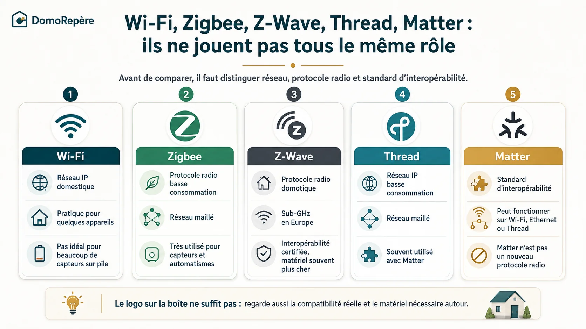
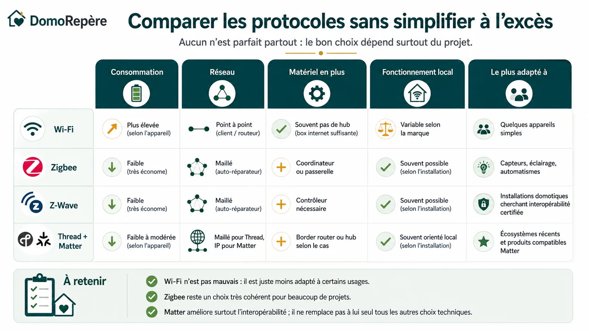
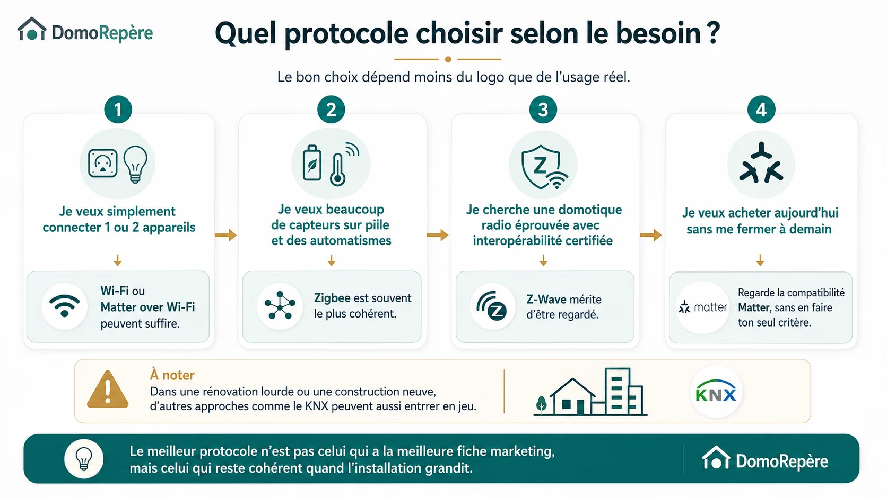

Quand on commence à regarder la domotique, on a vite l’impression qu’il faut choisir un camp : Wi‑Fi, Zigbee, Z-Wave, Thread, Matter… et si possible le bon dès le premier achat. En réalité, la première difficulté vient surtout d’un malentendu : ces termes ne jouent pas tous le même rôle.
Certains désignent un réseau radio ou réseau IP, d’autres un standard d’interopérabilité. Et c’est précisément ce qui crée beaucoup de confusion au moment d’acheter. Un appareil peut par exemple être compatible Matter sans être « meilleur » qu’un appareil Zigbee : il ne répond simplement pas exactement à la même logique.
Dans ce guide, on va donc comparer ces technologies sans slogans et sans raccourcis. L’objectif n’est pas de te réciter une fiche marketing, mais de t’aider à construire une installation cohérente, évolutive et agréable à utiliser au quotidien.
1. Avant de comparer, il faut comprendre qui fait quoi
Si l’on mélange tout, on finit vite par comparer des choses qui ne sont pas au même niveau.
- Wi‑Fi : un réseau IP très courant dans la maison, déjà présent via la box ou le routeur.
- Zigbee : un protocole radio basse consommation, très répandu pour les capteurs, prises, ampoules et automatismes.
- Z-Wave : un autre protocole radio domotique, fonctionnant en Europe sur des fréquences sub‑GHz, avec un écosystème certifié.
- Thread : un réseau IP maillé basse consommation, conçu pour les objets connectés.
- Matter : un standard d’interopérabilité qui peut s’appuyer notamment sur du Wi‑Fi, de l’Ethernet ou de Thread.

2. Le Wi‑Fi : simple pour commencer, mais pas idéal pour tout
Le Wi‑Fi a un avantage énorme : il est déjà là. Pour une prise connectée, une caméra, un robot ou quelques équipements isolés, il peut très bien convenir. Souvent, aucun hub supplémentaire n’est nécessaire : l’appareil rejoint simplement le réseau de la maison.
Le problème, ce n’est pas que le Wi‑Fi soit « mauvais ». C’est surtout qu’il n’est pas pensé en priorité pour une flotte de petits capteurs basse consommation. Beaucoup d’appareils Wi‑Fi dépendent également du cloud du fabricant pour les commandes avancées, les scénarios ou les notifications.
- Ce qu’il fait bien : démarrage rapide, matériel facile à trouver, peu de matériel supplémentaire.
- Ses limites : consommation souvent plus élevée, dépendance fréquente au cloud, qualité très variable selon les marques et le réseau du logement.
Donc non, il n’existe pas de seuil magique du type « au-delà de 15 ou 20 appareils, tout s’écroule ». Cela dépend énormément du routeur, de la qualité du réseau, du type d’appareil et de l’usage réel. En revanche, plus tu multiplies les objets Wi‑Fi grand public, plus tu risques d’additionner des applications, des clouds et des comportements hétérogènes.
3. Le Zigbee : souvent le choix le plus cohérent pour beaucoup de projets
Zigbee est très utilisé en domotique résidentielle pour une raison simple : il est particulièrement adapté aux équipements qui envoient peu de données mais doivent rester autonomes longtemps. C’est typiquement le cas des capteurs d’ouverture, de température, de mouvement ou de fuite d’eau.
Son fonctionnement en réseau maillé permet à certains appareils alimentés en permanence — prises, ampoules, modules sur secteur — de relayer les communications. Un réseau Zigbee bien construit devient donc souvent plus robuste à mesure qu’il s’étoffe.
- Ce qu’il fait bien : très faible consommation, grand choix de produits, réseau maillé efficace, bonne réactivité.
- Ses limites : il faut un coordinateur ou une passerelle, et la compatibilité réelle dépend encore du hub ou de la plateforme utilisée.
Zigbee n’est pas « la solution parfaite universelle ». En revanche, pour beaucoup d’installations domestiques qui veulent des capteurs, de l’éclairage et des automatismes, c’est souvent un point d’équilibre très intelligent entre budget, simplicité et évolutivité.
4. Le Z-Wave : une alternative sérieuse, souvent plus chère
Z-Wave suit une logique proche sur plusieurs points : faible consommation, réseau maillé, usage orienté domotique. En Europe, il fonctionne sur des fréquences sub‑GHz, ce qui peut être intéressant dans certains environnements. Son autre point fort, c’est l’interopérabilité certifiée entre équipements Z-Wave certifiés.
Concrètement, cela ne veut pas dire que tout sera toujours parfait dans tous les logiciels et avec toutes les fonctions possibles. Mais l’écosystème a historiquement une approche plus encadrée de la certification que beaucoup de produits Zigbee grand public.
- Ce qu’il fait bien : écosystème domotique mature, certification sérieuse, très bon candidat pour des installations qui veulent une radio dédiée à la domotique.
- Ses limites : prix souvent plus élevé, offre parfois moins large ou moins facile à trouver que le Zigbee selon les catégories.
Si tu cherches un système radio domotique éprouvé avec une bonne logique de compatibilité, Z-Wave mérite clairement d’être regardé. Il ne faut simplement pas le présenter comme un choix « forcément supérieur » à tout le reste.
5. Thread et Matter : prometteurs, mais ils ne sont pas interchangeables
C’est probablement la partie la plus mal comprise aujourd’hui.
Thread est un réseau IP basse consommation en maillage. Il ressemble à Zigbee sur certains aspects de terrain — réseau maillé, orientation objets connectés, faible consommation — mais repose sur une logique IP.
Matter, lui, se situe surtout au niveau de l’interopérabilité applicative. Son intérêt est d’aider des appareils compatibles à parler un langage commun entre différents écosystèmes. Un appareil Matter peut fonctionner via Wi‑Fi, Ethernet ou Thread selon sa conception.
Autrement dit :
- Thread répond surtout à la question « sur quel type de réseau l’appareil communique-t-il ? »
- Matter répond surtout à la question « comment plusieurs écosystèmes compatibles peuvent-ils mieux se comprendre ? »
Dans la pratique, il est très raisonnable de surveiller Matter lors de nouveaux achats, surtout si tu veux éviter de te fermer à l’avenir. Mais ce n’est pas un motif suffisant pour écarter automatiquement un très bon produit Zigbee ou Z-Wave qui répond déjà parfaitement au besoin.

6. Comparatif pratique : ce qui change vraiment
| Technologie | Ce qu’elle fait surtout | Ce qu’il faut prévoir | Quand c’est souvent pertinent |
|---|---|---|---|
| Wi‑Fi | Connexion directe au réseau de la maison, souvent sans hub dédié | Vérifier la dépendance au cloud et la qualité de l’application | Quelques appareils simples, caméras, prises, produits autonomes |
| Zigbee | Réseau radio maillé basse consommation | Un coordinateur ou une passerelle compatible | Capteurs, éclairage, automatisations, installation qui grandit progressivement |
| Z-Wave | Réseau radio maillé domotique sub‑GHz | Un contrôleur compatible et un budget souvent plus élevé | Projet recherchant un écosystème radio domotique certifié |
| Thread | Réseau IP maillé basse consommation | Souvent un border router selon les appareils et l’écosystème | Écosystèmes récents et équipements orientés interopérabilité IP |
| Matter | Standard d’interopérabilité entre appareils et plateformes compatibles | Vérifier sur quel réseau il fonctionne et quelles fonctions sont réellement supportées | Nouveaux achats quand on veut garder une certaine ouverture entre écosystèmes |
La vraie question n’est pas :
« Quel est le meilleur protocole dans l’absolu ? »
La vraie question est : « Lequel reste cohérent quand mon installation grandit ? »
7. Que choisir selon ton besoin ?
Si l’on doit simplifier sans raconter n’importe quoi, voilà comment je raisonnerais.
- Tu veux simplement connecter 1 ou 2 appareils : le Wi‑Fi peut suffire, éventuellement Matter over Wi‑Fi si le produit est intéressant et bien intégré à ton environnement.
- Tu veux beaucoup de capteurs sur pile et des automatismes : Zigbee est souvent le choix le plus cohérent pour démarrer proprement.
- Tu veux une domotique radio éprouvée avec interopérabilité certifiée : Z-Wave mérite d’être étudié.
- Tu veux acheter aujourd’hui sans te fermer à demain : regarde la compatibilité Matter, mais sans en faire ton seul critère d’achat.

8. Avant d’acheter, vérifie ces cinq points
Un achat cohérent commence par un usage, pas par un logo.
Passerelle Zigbee, contrôleur Z-Wave, border router Thread, application cloud… il faut regarder l’écosystème complet.
C’est souvent plus important que le protocole lui-même pour l’usage quotidien.
Le vrai sujet est l’évolutivité, pas seulement le premier achat.
« Compatible Matter », « compatible Alexa » ou « compatible Google » ne veulent pas toujours dire la même chose selon les fonctions.
9. Les pièges à éviter
Piège n°1 : choisir sur la base d’un slogan
« Sans hub », « universel », « compatible tout » ou « prêt pour l’avenir » sont des formulations séduisantes, mais trop vagues pour suffire à décider. Il faut aller voir ce que cela signifie réellement dans ton cas.
Piège n°2 : croire que Matter remplace tout le reste
Matter est intéressant, oui. Mais ce n’est pas parce qu’un produit affiche ce logo qu’il devient automatiquement le meilleur choix pour tous les projets.
Piège n°3 : tout faire en Wi‑Fi par facilité
Pour quelques produits, très bien. Pour une installation riche en capteurs et automatismes, ce n’est pas toujours la stratégie la plus propre ni la plus agréable à maintenir.
Piège n°4 : oublier la plateforme de pilotage
Deux appareils utilisant la même technologie ne proposeront pas forcément la même expérience selon la passerelle, la box domotique ou l’application utilisée derrière.
Tu peux parcourir les équipements chez notre partenaire Domadoo, mais garde la méthode DomoRepère en tête : besoin → compatibilité → solution → matériel.
Lien partenaire : DomoRepère peut percevoir une commission sur certains achats, sans surcoût pour toi.
Voir les équipements chez DomadooQuestions fréquentes
Est-ce que Zigbee est forcément meilleur que le Wi‑Fi ?
Non. Zigbee est souvent plus adapté à beaucoup de capteurs et d’automatismes basse consommation. Mais pour quelques appareils simples, le Wi‑Fi peut très bien faire le travail. Le bon choix dépend du besoin et de l’évolution prévue de l’installation.
Matter remplace-t-il Zigbee ou Z-Wave ?
Non. Matter améliore surtout l’interopérabilité entre appareils et plateformes compatibles. Il ne remplace pas à lui seul tous les choix techniques liés au réseau, au matériel nécessaire ou à l’écosystème utilisé.
Thread et Matter, c’est la même chose ?
Non. Thread est un type de réseau IP basse consommation. Matter est un standard d’interopérabilité applicative. Les deux sont souvent associés, mais ils ne remplissent pas le même rôle.
Quel protocole choisir pour commencer en domotique ?
Si tu pars de zéro et que tu veux aller au-delà de quelques objets isolés, Zigbee est souvent un très bon point de départ. Si tu veux seulement connecter un ou deux appareils, le Wi‑Fi peut suffire. Et pour de nouveaux achats, garder un œil sur la compatibilité Matter est une bonne idée.
En résumé
Wi‑Fi, Zigbee, Z-Wave, Thread et Matter ne sont pas des copies les uns des autres. Chacun répond à une logique différente, avec ses avantages, ses contraintes et ses cas d’usage.
Si tu retiens une seule chose, retiens celle-ci : le meilleur protocole n’est pas celui qui a la meilleure fiche marketing. C’est celui qui reste cohérent quand ton installation grandit.
Et si tu veux repartir de la méthode complète, commence aussi par le premier guide : Débuter en domotique : par quoi commencer ?